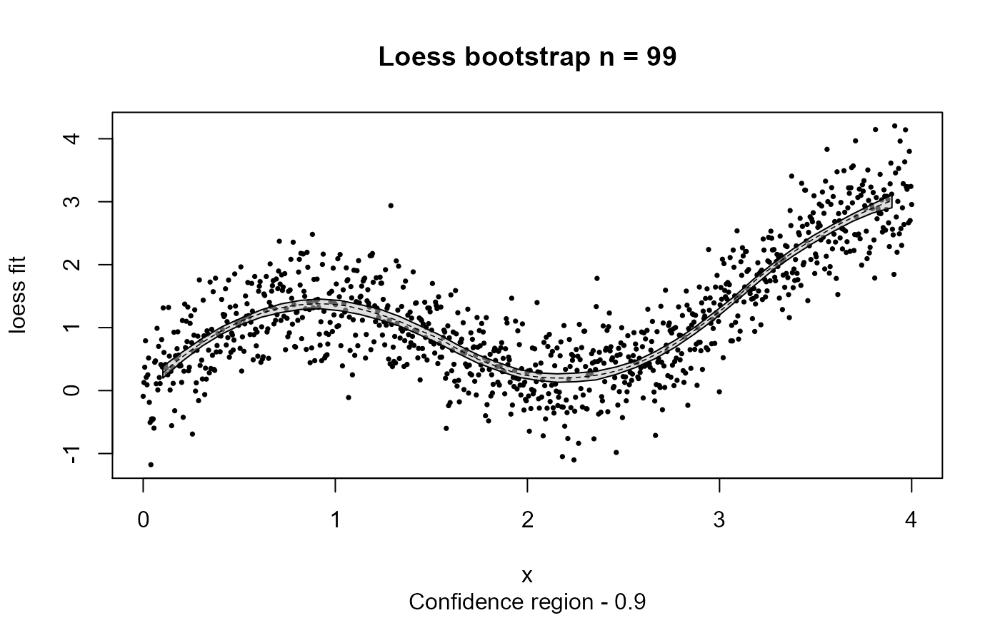

Bootstrap of a Local Polynomial Regression (loess)
The function fits a loess curve and then calculates a symmetric nonparametric bootstrap with a confidence region. Fitted curves are evaluated at a fixed number of equally-spaced x values, regardless of the number of x values in the data. Some replicates do not include the values at the lower and upper end of the range of x values. If the number of such replicates is too large, it becomes impossible to construct a confidence region that includes a fraction "confidence" of the bootstrap replicates. In such cases, the left and/or right portion of the confidence region is truncated.
loess.boot(x, y, nreps = 100, confidence = 0.95, ...)
| x | Independent variable |
|---|---|
| y | Dependent variable |
| nreps | Number of bootstrap replicates |
| confidence | Fraction of replicates contained in confidence region |
| ... | Additional arguments passed to loess function |
list object containing
nreps Number of bootstrap replicates
confidence Confidence interval (region)
span alpha (span) parameter used loess fit
degree polynomial degree used in loess fit
normalize Normalized data (TRUE/FALSE)
family Family of statistic used in fit
parametric Parametric approximation (TRUE/FALSE)
surface Surface fit, see loess.control
data data.frame of x,y used in model
fit data.frame including:
x - Equally-spaced x index (see NOTES)
y.fit - loess fit
up.lim - Upper confidence interval
low.lim - Lower confidence interval
stddev - Standard deviation of loess fit at each x value
Cleveland, WS, (1979) Robust Locally Weighted Regression and Smoothing Plots Journal of the American Statistical Association 74:829-836
Efron, B., and R. Tibshirani (1993) An Introduction to the Bootstrap Chapman and Hall, New York
Hardle, W., (1989) Applied Nonparametric Regression Cambridge University Press, NY.
Tibshirani, R. (1988) Variance stabilization and the bootstrap. Biometrika 75(3):433-44.
Jeffrey S. Evans jeffrey_evans@tnc.org
n=1000 x <- seq(0, 4, length.out=n) y <- sin(2*x)+ 0.5*x + rnorm(n, sd=0.5) sb <- loess.boot(x, y, nreps=99, confidence=0.90, span=0.40) plot(sb)